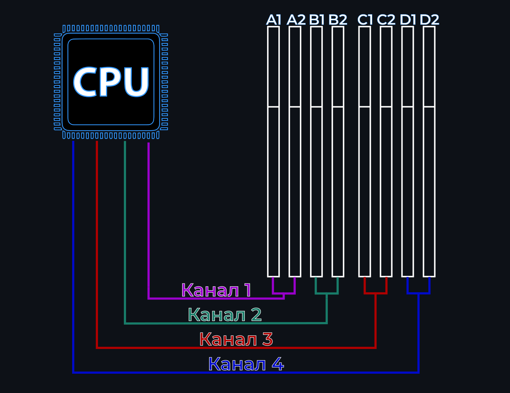
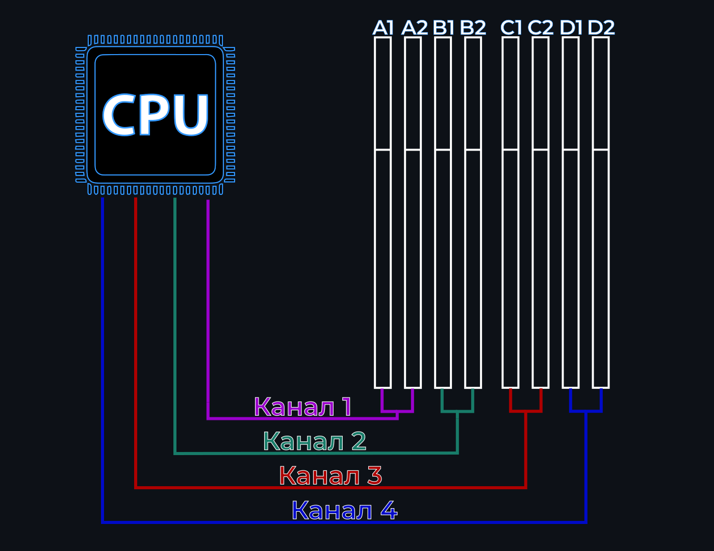

Материнская плата – прямоугольная пластина, исполосованная текстолитом, из которой выпирают множество разъёмов, иногда радиаторы.
Материнская плата – прямоугольная пластина, исполосованная текстолитом, из которой выпирают множество разъёмов, иногда радиаторы.
На плате располагаются и другие электрические элементы. В левом её левом верхнем углу или в центре располагается сокет для процессора.
Слева от него – входы для периферии, сети. В нижней центральной части – литиевая батарея. Справа от сокета – разъёмы для оперативной памяти. Снизу от сокета – разъёмы PCI для видеокарт или периферии.
Размеры (форм-факторы) материнских плат
 Форм-фактор материнской платы - установленный производителями стандарт, задающий ее габаритные, размеры крепления к корпусу, количество и расположение отверстий для подключения комплектующих ПК.
Форм-фактор материнской платы - установленный производителями стандарт, задающий ее габаритные, размеры крепления к корпусу, количество и расположение отверстий для подключения комплектующих ПК.
Этот параметр напрямую влияет, как на внешний вид в целом, собираемого системного блока, так и на вместительность. В контексте выбора материнской платы также стоит помнить, что от размера платы зависит тепловыделение и количество различных разъёмов на плате. Как правило, в современных ПК в большинстве используются платы размера ATX и Micro ATX.
Данные форм-факторы подойдут для сборки ПК любой конфигурации, начиная от офисного варианта, заканчивая игровым или рабочим компьютером.
Сокет материнской платы
 Сокетом материнской платы называется разъём для центрального процессора. Если сокет процессора не будет соответствовать сокету материнской платы, вы физически не сможете подключить эти комплектующие. У нескольких поколений процессоров сокеты могут совпадать.
Сокетом материнской платы называется разъём для центрального процессора. Если сокет процессора не будет соответствовать сокету материнской платы, вы физически не сможете подключить эти комплектующие. У нескольких поколений процессоров сокеты могут совпадать.
Совместимость процессора и BIOS платы
 В случае, если выбранная вами материнская плата была выпущена до появления на рынке выбранного процессора, они не будут иметь совместимости со старта.
В случае, если выбранная вами материнская плата была выпущена до появления на рынке выбранного процессора, они не будут иметь совместимости со старта.
Ревизия процессора характеризуется степпингом. Для того чтобы совместимость появилась вы должны будете обновить ПО BIOS вашей материнской платы. Сделать это можно несколькими способами:
1. Приобрести материнскую плату новой партии выпуска (с новой, поддерживаемой версией BIOS). Данный способ очень редко жизнеспособен, поскольку никакая компания-производитель плат помимо ASRock не указывает версию BIOS на плате или в её характеристиках.
У ASRock версия BIOS указывается на микросхеме самого BIOS. Выглядит это следующим образом:

2. Использовать функцию BIOS FlashBack для обновления BIOS. Однако, эта функция поддерживается не всеми материнскими платами. Чтобы совершить обновление этим способ безопасно – следуйте инструкции производителя материнской платы.
3. Использовать специальное устройство для прошивки – программатор. Этот способ подойдёт вам в случае отсутствия опции FlashBack, но требует определённый навык.
4. Запустить ПК на поддерживаемом материнской платой процессоре, обновить BIOS и поменять процессор на желаемый.
Чипсет материнской платы
 Чипсет материнской платы обычно записывается производителями в цифробуквенном виде в названии продукта. Для покупателя основных отличия различных чипсетов три:
Чипсет материнской платы обычно записывается производителями в цифробуквенном виде в названии продукта. Для покупателя основных отличия различных чипсетов три:
1. Количество разъёмов материнской платы.
2. Возможность поддержки SLI/Crossfire режимов работы видеокарт.
3. Возможность разгона процессора и/или оперативной памяти.
 Важно понимать, что чипсет платы не гарантирует любую из вышеперечисленных характеристик, а лишь влияет на возможность производителя добавить её.
Важно понимать, что чипсет платы не гарантирует любую из вышеперечисленных характеристик, а лишь влияет на возможность производителя добавить её.
Поэтому если вы хотите приобрести плату с пониманием различий чипсетов, для гарантии успешной покупки вы всегда должны проверять на наличие поддержки в спецификации той или иной функции.
Поддержка SLI/Crossfire
Функции SLI и Crossfire нужны для полноценной работы в паре видеокарт. На текущий момент на рынке существуют платы с разными режимами работы этих функций. Встречаются режимы x8x8, когда на каждую из видеокарт выделяется по 8 линий PCI-Express.
Также вы можете найти режим x16x16, где таких линий на каждую карту уже по 16. Однако, для современных видеокарт большого отличия между режимами в производительности нет.
Существует также режим x16x4, однако этот режим уже сильно ограничивает производительность одной из карт, и покупать несколько карт для этого режима крайне сомнительно экономически.
Если вы нацелены на использование одного из этих режимов, учтите, что во время использования этих технологий вы можете наблюдать различные графические ошибки во время исполнения различных задач.
Из-за этого мы рекомендуем вам смотреть в сети тесты вашей конкретной связки видеокарт и технологии в ваших задачах.
 Это связано с объёмом передаваемой по различному количеству PCI-линий видеокартой информацией.
Подробнее
Это связано с объёмом передаваемой по различному количеству PCI-линий видеокартой информацией.
Подробнее
Видеокарты, подключённые по SLI также должны быть соединены специальным мостом SLI. Выглядит он следующим образом:
Для подключения видеокарт с помощью Crossfire такой мост не нужен.
Поддержка разгона процессора/оперативной памяти
 Поддержка разгона выражается в значениях частот, которые может достигать оперативная память. Наличие такой поддержки позволяет изменять частоту и тайминги памяти вручную.
Поддержка разгона выражается в значениях частот, которые может достигать оперативная память. Наличие такой поддержки позволяет изменять частоту и тайминги памяти вручную.
В противном случае вы максимум сможете редактировать только тайминги.
Даже если вы не рассматриваете возможность разгона вы должны знать, что платы такой поддержки имеют жёсткое ограничение по максимальной частоте оперативной памяти.
Эти ограничения также прописаны в характеристиках материнских плат.
Наличие поддержки разгона процессора обычно не указывается производителями. Поэтому, найти информацию об этом вы можете на сайте производителя чипсета, который указывается в технических характеристиках платы.
VRM материнской платы
 При выборе материнской платы стоит учитывать характеристики питания VRM. Сами производители их почти нигде не указывают. Однако в сети существуют таблицы, в которых достаточно подробно указываются нужны для благополучного выбора платы.
При выборе материнской платы стоит учитывать характеристики питания VRM. Сами производители их почти нигде не указывают. Однако в сети существуют таблицы, в которых достаточно подробно указываются нужны для благополучного выбора платы.
Обращать внимания стоит на: производителя контроллера ШИМ (PWM controller), производителя даблеров, распределение каналов и способ организации.
Таким образом эти характеристики могут выглядеть в таблице:
Лучшие производители контроллеров, ШИМ и даблеров: Infenion, Intersil. Более бюджетный - uPI Semi.
Для материнских плат, подбираемый не под разгон комплектующих достаточно 4 распараллеленных или даблерных процессорных фаз будет достаточно минимально.
При разгоне вам понадобится 7-8 распараллеленных или простых фаз, или 5-6 даблерных фаз.
Охлаждение системы питания
Важно помнить об охлаждении цепей VRM. Такое охлаждение представлено радиаторами в соответствующих областях – слева и/или сверху от сокета.
Оценить максимальную температуру на цепях питания достаточно просто – найдите в сети соответствующие тесты или тепловизионные снимки.
Тесты температур цепей питания проводятся с использованием самых производительных процессоров, а с учётом того что замеры производятся в условиях отсутствия циркуляции воздуха реальные температуры в вашем пк будут на 10-15 градусов меньше.
Предел по температурам для цепей питания, выходя за который характеристики цепей питания будут падать – 75-80 градусов. Выбирайте платы, не выходящие за этот промежуток.
QVL список, каналы и топология материнской платы
 Наличие оперативной памяти в списке QVL, количество каналов и топология платы в разных степенях влияют на работоспособность оперативной памяти.
Наличие оперативной памяти в списке QVL, количество каналов и топология платы в разных степенях влияют на работоспособность оперативной памяти.
В процессе производства материнской платы производители тестируют различные модули оперативной памяти на определённых частотах.
Результаты тестов (будет память работать при определённых параметрах на этой плате или нет) производители также выкладывают на сайтах со своей продукцией, обычно в отдельный раздел QVL.
Также в QVL списках указывается ранг памяти в формате 1Rx8 (первый ранг, 8 чипов памяти) / 2Rx16 (второй ранг, 16 чипов памяти) или SS / DS (single side/double side).
 Во втором случае указывают по сути количество сторон, на которых расположены чипы памяти.
Подробнее
Во втором случае указывают по сути количество сторон, на которых расположены чипы памяти.
Подробнее
Также QVL список можно найти на сайтах с самой оперативной памятью. Однако, если рассматриваемого вами модуля в QVL списке платы нет, это не значит, что он не будет работать, просто производитель этого не гарантирует.
Также, редко, но были прецеденты, когда протестированная память на заявленной частоте не работала, следовательно, 100%-ной точности у таких списков быть не может.
Ещё стоит помнить о том, что разные версии ПО BIOS могут влиять как на разгон, так и на совместимость.
Некоторые платы имеют несколько списков QVL под разные поколения процессоров. Обязательно проверяйте соответствие вашего процессора списку QVL!
Количество каналов и топология материнской платы – крайне важные факторы влияния на оперативную память.
В соответствии с спецификацией, вы должны будете установить память на плату определённым образом. Важно понимать, что количество каналов определяется количеством парных разъёмов под оперативную память.
Большее количество задействованных каналов всегда означает большую производительность.
 На то, как установить модули памяти для максимального быстродействия (задействования максимального количества каналов) и влияют топология и количество каналов.
Подробнее
На то, как установить модули памяти для максимального быстродействия (задействования максимального количества каналов) и влияют топология и количество каналов.
Подробнее
Существует три вида топологии у материнских плат – Цепь Дейзи (Daisy Chain), Т-топология (T Topology), и топология для двух разъёмов.
Память, подключённая к разъёмам с топологией Дейзи, лучше работает (лучше разгоняется и более вероятно запускаются заявленные производителем частоты), если у каждого канала задействовано по одному разъёму.
У плат с Т-топологией лучшая производительность достигается при подключении всех разъёмов.
Когда разъёмов для оперативной памяти на плате только два – модули разгоняются лучше и более вероятно совместимы чем на платах с другой топологией.
Определить вид топологии платы можно также с помощью QVL списка – если память с максимальной частотой тестировалась в 4-ёх модульном исполнении, то плата скорее всего имеет Т-топологию, а если в 2-ух модульном, то Цепь Дейзи если количество разъёмов на плате превышает 2.
Очень важно понимать, что топология оказывает влияние на работоспособность оперативной памяти только при частотах свыше 3800 MHZ.
 На данной схеме вы можете увидеть принципиальное различие топологий:
А это – схема подключения каналов к процессору (при Т-топологии):

Подробнее
На данной схеме вы можете увидеть принципиальное различие топологий:
А это – схема подключения каналов к процессору (при Т-топологии):

Подробнее
Помимо материнской платы, память зависит от процессора, а если точнее – от контроллера памяти процессора.
В характеристиках процессора указывается максимальная поддерживаемая частота памяти, однако у производителей AMD максимальная частота, на которой память действительно могла работать нормально в среднем была меньше на 2%.
Владельцы процессоров Intel ограничены лишь материнской платой.
Разъемы
M.2 SSD
SSD накопители формата M.2 имеют различные ключи подключения к материнской плате. Соответственно, ключ накопителя должен соответствовать входу на материнской плате.
Ключи бывают двух видов, M и B:

Таким образом выглядит место для накопителя с ключом M или B и M одновременно:
Вы не сможете подключить накопитель только с ключом M в вход ключа B. Если на накопителе два ключа, то, в зависимости от производителя, он может поддерживаться платой с ключом M.
Уточнить это вы можете в технических характеристиках – если в параметрах разъёма будет указана шина SATA, то накопитель ключа B совместим.
Если вы имеете накопитель ключа M, то будет лучше, если вы приобретёте плату с радиаторами и на M.2 накопители, так как именно такие SSD греются больше всего.
SATA разъёмы
Зачастую M.2 накопители делят с разъёмами SATA одну и ту же шину, вследствие чего некоторые порты SATA могут отключаться при задействованном M.2 разъёме.
О том, какие конкретно порты не будут работать написано в спецификации материнской платы в соответствующем разделе.
USB разъёмы
Для того, чтобы все USB порты на передней или верхней панелях вашего корпуса работали – им соответствовать разъём на материнской плате.
Учитывайте также, что разъём USB 2.0 на материнской плате может использоваться для питания SD Card ридеров и помп водяного охлаждения. Фото этих разъёмов с количеством питаемых ими портов USB:
Вентиляторные разъёмы
Каждому из корпусных, радиаторных вентиляторов должен соответствовать один разъём, название которого оканчивается на _FAN, _OPT, _PUMP, _PUMP+. Эти разъёмы выглядят так:
Разъёмы подсветки
Разъёмы подключения подсветки не взаимозаменяемы. Подключая устройство, расчитанное на 5 Вольт к 12 Вольтовому коннектору вы скорее всего лишитесь или того, или другого. Представлены эти разъёмы в основном в трёх видах:
Дополнительные сведения
На некоторых материнских платах устанавливаются несколько микросхем BIOS, для того чтобы в экстренной ситуации вы смогли поменять их местами, и запустить ПК, не прибегая к помощи сервисных центров.
На платах иногда устанавливается экран пост-кода, который бывает полезен в случае любой не нормальной работы ПК.
Этот экран сообщит вам о том, с чем возникла проблема в система с помощью кода, расшифровать который вы сможете с помощью спецификации платы.
О всех остальных функциях и их параметрах материнской платы производители всегда пишут в технических характеристиках.
Алгоритм выбора материнской платы
1. Определитесь с выбором процессора. Его сокет должен совпадать с сокетом материнской платы.
Если вы не имеете возможности в любом случае обновить BIOS платы:
Степпинг процессора, который вы можете найти, введя в любую поисковую строку код производителя или номер партии, которые вы найдёте на странице в интернет-магазине, вы должны запомнить и сравнить дату выхода процессора именно с таким степпингом и материнской платы.
В случае, если процессор вашего степпинга появился раньше выхода материнской платы – учтите это и подготовьтесь в соответствии с написанным в главе про совместимость процессора и BIOS платы.
В противном случае, вы рискуете получить неработающий с момента сборки ПК.
2. Выберете чипсет платы в соответствии с пожеланиями (разгон, количество различных разъёмов, SLI/Crossfire).
3. Оцените элементную базу VRM понравившихся плат в соответствии с пожеланиями (разгон, отсутствие разгона). Отсеивайте по температуре платы, VRM которых в тестах нагревается выше 75-80 градусов.
4. Учтите все разъёмные нюансы. Также убедитесь, что выбранный вам корпус поддерживает форм-фактор платы.
5. Удостоверьтесь, что каждому из ваших устройств (монитору, наушникам, микрофону, клавиатуре/мышке, портам USB, CD-ROM, Card ридеру и т.д) соответствует разъём на материнской плате. Если же каких-то разъёмов не хватает, проверьте, не существует ли переходников на большее количество входов, прежде чем отсеивать плату. Проверьте, удовлетворит ли вас максимальная пропускная способность интернет подключения платы. Проверьте с помощью отзывов качество звуковой карты материнской платы.
6. Если вы собираетесь разгонять комплектующие, постарайтесь найти в сети тест вашего конкретного набора с выбранной платой для того, чтобы вы понимали, на что рассчитывать.